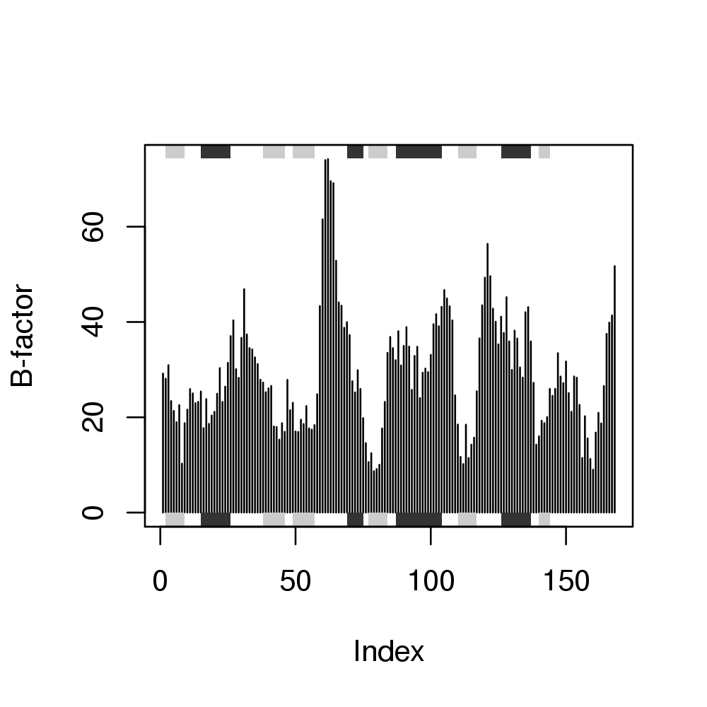

Biological Structure Analysis
### ### Example of PDB file manipulation, serching, alignment etc. ### ### Authors Xin-Qiu Yao ### Lars Skjaerven ### Barry J Grant ### require(bio3d); require(graphics); pause <- function() { cat("Press ENTER/RETURN/NEWLINE to continue.") readLines(n=1) invisible() } ############################################# ## # ## Basic PDB file reading and manipulation # ## # ############################################# pause()Press ENTER/RETURN/NEWLINE to continue.# Read an online RCSB Protein Data Bank structure pdb <- read.pdb("4q21")Note: Accessing online PDB file HEADER ONCOGENE PROTEIN 25-SEP-91 4Q21# Whats in the new pdb object print(pdb)Call: read.pdb(file = "4q21") Atom Count: 1447 Total ATOMs#: 1340 Protein ATOMs#: 1340 ( Calpha ATOMs#: 168 ) Non-protein ATOMs#: 0 ( residues: ) Chains#: 1 ( values: A ) Total HETATOMs: 107 Residues HETATOMs#: 80 ( residues: MG GDP HOH ) Chains#: 1 ( values: A ) Sequence: MTEYKLVVVGAGGVGKSALTIQLIQNHFVDEYDPTIEDSYRKQVVIDGETCLLDILDTAG QEEYSAMRDQYMRTGEGFLCVFAINNTKSFEDIHQYREQIKRVKDSDDVPMVLVGNKCDL AARTVESRQAQDLARSYGIPYIETSAKTRQGVEDAFYTLVREIRQHKL + attr: atom, het, helix, sheet, seqres, xyz, xyz.models, calpha, callpause()Press ENTER/RETURN/NEWLINE to continue.# Most bio3d functions, including read.pdb(), return list objects attributes(pdb)$names [1] "atom" "het" "helix" "sheet" "seqres" [6] "xyz" "xyz.models" "calpha" "call" $class [1] "pdb"pdb$atom[1:3, c("resno", "resid", "elety", "x", "y", "z")]resno resid elety x y z [1,] "1" "MET" "N" "64.080" "50.529" "32.509" [2,] "1" "MET" "CA" "64.044" "51.615" "33.423" [3,] "1" "MET" "C" "63.722" "52.849" "32.671"pause()Press ENTER/RETURN/NEWLINE to continue.# Selection of substructure regions with 'atom.select()'' function inds <- atom.select(pdb, elety = c("N","CA","C"), resno=4:6)Build selection from input components segid chain resno resid eleno elety Stest "" "" "4,5,6" "" "" "N,CA,C" Natom "1340" "1340" "29" "1340" "1340" "505" * Selected a total of: 9 intersecting atoms *pdb$atom[inds$atom,]eleno elety alt resid chain resno insert x y z [1,] "25" "N" NA "TYR" "A" "4" NA "62.736" "60.251" "33.384" [2,] "26" "CA" NA "TYR" "A" "4" NA "61.817" "61.333" "33.161" [3,] "27" "C" NA "TYR" "A" "4" NA "62.492" "62.578" "33.675" [4,] "37" "N" NA "LYS" "A" "5" NA "62.654" "63.574" "32.804" [5,] "38" "CA" NA "LYS" "A" "5" NA "63.343" "64.814" "33.163" [6,] "39" "C" NA "LYS" "A" "5" NA "62.328" "65.837" "33.628" [7,] "46" "N" NA "LEU" "A" "6" NA "62.263" "66.117" "34.955" [8,] "47" "CA" NA "LEU" "A" "6" NA "61.321" "67.068" "35.557" [9,] "48" "C" NA "LEU" "A" "6" NA "62.005" "68.430" "35.889" o b segid elesy charge [1,] "1.00" "26.38" NA "N" NA [2,] "1.00" "23.42" NA "C" NA [3,] "1.00" "25.05" NA "C" NA [4,] "1.00" "21.98" NA "N" NA [5,] "1.00" "21.34" NA "C" NA [6,] "1.00" "21.86" NA "C" NA [7,] "1.00" "19.48" NA "N" NA [8,] "1.00" "18.99" NA "C" NA [9,] "1.00" "25.96" NA "C" NApause()Press ENTER/RETURN/NEWLINE to continue.# Simple B-factor plot ca.inds <- atom.select(pdb, "calpha")Build selection from input string Using selection 'string' keyword shortcut: calpha = //////CA/ segid chain resno resid eleno elety Stest "" "" "" "" "" "CA" Natom "1340" "1340" "1340" "1340" "1340" "168" * Selected a total of: 168 intersecting atoms *plot.bio3d( pdb$atom[ca.inds$atom,"b"], sse=pdb, ylab="B-factor")
################################### ## # ## Search for similar structures # ## # ################################### # Use sequence aa <- pdbseq(pdb) aa1 2 3 4 5 6 7 8 9 10 11 12 13 14 15 16 17 18 19 20 "M" "T" "E" "Y" "K" "L" "V" "V" "V" "G" "A" "G" "G" "V" "G" "K" "S" "A" "L" "T" 21 22 23 24 25 26 27 28 29 30 31 32 33 34 35 36 37 38 39 40 "I" "Q" "L" "I" "Q" "N" "H" "F" "V" "D" "E" "Y" "D" "P" "T" "I" "E" "D" "S" "Y" 41 42 43 44 45 46 47 48 49 50 51 52 53 54 55 56 57 58 59 60 "R" "K" "Q" "V" "V" "I" "D" "G" "E" "T" "C" "L" "L" "D" "I" "L" "D" "T" "A" "G" 61 62 63 64 65 66 67 68 69 70 71 72 73 74 75 76 77 78 79 80 "Q" "E" "E" "Y" "S" "A" "M" "R" "D" "Q" "Y" "M" "R" "T" "G" "E" "G" "F" "L" "C" 81 82 83 84 85 86 87 88 89 90 91 92 93 94 95 96 97 98 99 100 "V" "F" "A" "I" "N" "N" "T" "K" "S" "F" "E" "D" "I" "H" "Q" "Y" "R" "E" "Q" "I" 101 102 103 104 105 106 107 108 109 110 111 112 113 114 115 116 117 118 119 120 "K" "R" "V" "K" "D" "S" "D" "D" "V" "P" "M" "V" "L" "V" "G" "N" "K" "C" "D" "L" 121 122 123 124 125 126 127 128 129 130 131 132 133 134 135 136 137 138 139 140 "A" "A" "R" "T" "V" "E" "S" "R" "Q" "A" "Q" "D" "L" "A" "R" "S" "Y" "G" "I" "P" 141 142 143 144 145 146 147 148 149 150 151 152 153 154 155 156 157 158 159 160 "Y" "I" "E" "T" "S" "A" "K" "T" "R" "Q" "G" "V" "E" "D" "A" "F" "Y" "T" "L" "V" 161 162 163 164 165 166 167 168 "R" "E" "I" "R" "Q" "H" "K" "L"pause()Press ENTER/RETURN/NEWLINE to continue.# Blast the RCSB PDB to find similar sequences blast <- blast.pdb(aa)Searching ... please wait (updates every 5 seconds) RID = 88D7SG60014 . Reporting 289 hitshead(blast$hit.tbl)queryid subjectids identity positives alignmentlength [1,] "unnamed" "gi|231226|pdb|6Q21|A" "100.00" "100.00" "168" [2,] "unnamed" "gi|231227|pdb|6Q21|B" "100.00" "100.00" "168" [3,] "unnamed" "gi|231228|pdb|6Q21|C" "100.00" "100.00" "168" [4,] "unnamed" "gi|231229|pdb|6Q21|D" "100.00" "100.00" "168" [5,] "unnamed" "gi|15988032|pdb|1IOZ|A" "100.00" "100.00" "168" [6,] "unnamed" "gi|157829765|pdb|1AA9|A" "100.00" "100.00" "168" mismatches gapopens q.start q.end s.start s.end evalue bitscore [1,] " 0" "0" "1" "168" " 1" "168" "5e-123" "348" [2,] " 0" "0" "1" "168" " 1" "168" "5e-123" "348" [3,] " 0" "0" "1" "168" " 1" "168" "5e-123" "348" [4,] " 0" "0" "1" "168" " 1" "168" "5e-123" "348" [5,] " 0" "0" "1" "168" " 1" "168" "5e-123" "348" [6,] " 0" "0" "1" "168" " 1" "168" "5e-123" "348"pause()Press ENTER/RETURN/NEWLINE to continue.# Plot results top.hits <- plot(blast)* Possible cutoff values include: 237 62 Yielding Nhits: 151 289 ** Chosen cutoff value of: 62 Yielding Nhits: 289
head(top.hits$hits)pdb.id gi.id group 1 "6Q21_A" "231226" "1" 2 "6Q21_B" "231227" "1" 3 "6Q21_C" "231228" "1" 4 "6Q21_D" "231229" "1" 5 "1IOZ_A" "15988032" "1" 6 "1AA9_A" "157829765" "1"pause()Press ENTER/RETURN/NEWLINE to continue.## Download and and analyze further .... ## raw.files <- get.pdb(top.hits$pdb.id, path="raw_hits") ## files <- pdbsplit(raw.files, top.hits$hits, path="top_hits") ## pdbs <- pdbaln(files) ## ......